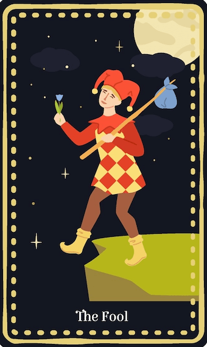
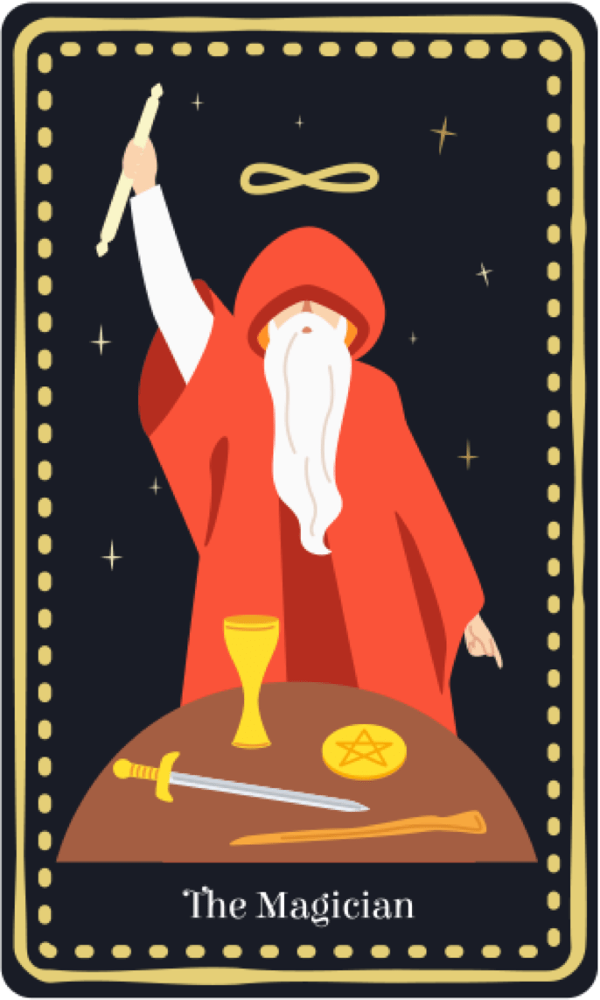
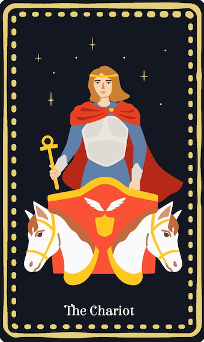
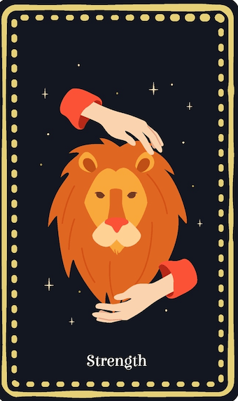
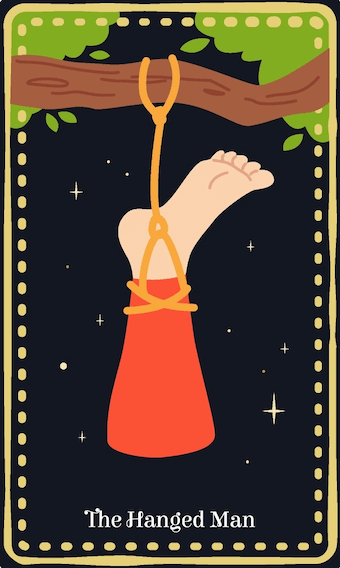

🃜🃚🃖 Tarot Kartlarının Anlamları ğŸ‚🂺ğŸ‚
Tarot destesindeki tüm Büyük Arkana kartları ve anlamları aşağıda verilmiştir:
| Kart | Anlamı | Görsel |
|---|---|---|
| 0 - Deli | Her an yeni başlangıçlar olabilir, ancak bu başlangıçların iyi ya da kötü olacağına sizin adımlarınız karar verecek. |  |
| 1 - Büyücü | Çok güzel yükselişler yaşayabilirsiniz. Şans sizden yana, istediğinizi elde etmek için her kapı açılacak. |  |
| 2 - Baş Rahibe | Enerjinizin yükseleceği ve güzel kapıların açılacağı bir döneme giriyorsunuz. |  |
| 3 - İmparatoriçe | Dişil enerjinin desteğini üzerinizde hissedecek, bolluk ve bereketin arttığını gözlemleyeceksiniz. |  |
| 4 - İmparator | Eril enerjinin desteğini üzerinde hissedeceksiniz. Otorite, sizin düzeniniz için olumlu etkiler yaratacak. |  |
| 5 - Baş Rahip | Bir rehbere ihtiyaç duyabilir ya da rehber siz olabilirsiniz. Hislerinizle hareket etmek için doğru zaman. |  |
| 6 - Aşıklar | Duygularınızın yükseleceği bir dönem olacak. Sevdiklerinizle birlikte vakit geçirmeniz gereken bir süreç. |  |
| 7 - Savaş Arabası | Belirsizlikten bir an önce kurtulun. Zafer elde etmek için dikkatli düşünmeli ve öyle ilerlemelisiniz. |  |
| 8 - Güç | Cesaretinizin arttığı bir döneme giriyorsunuz. Bunu doğru yönde kullanmaya çalışın. |  |
| 9 - Ermiş | İçsel yolculuğunuza önem verin. Önce şimdiki durumunuzu değerlendirin, ileriyi daha sonra düşünmelisiniz. |  |
| 12 - Asılan Adam | Sesiz kalmak ve kendi içinizi dinlemek size iyi gelecek. |  |
| 13 - Ölüm | Dönüşüm sizi bekliyor, her şey tam tersine dönebilir. Dikkatli ilerleyin. |  |
| 21 - Dünya | Kendinizi tamamlanmış hissedeceksiniz ve başarı, mutluluk sırasıyla sizi bulacak. |  |